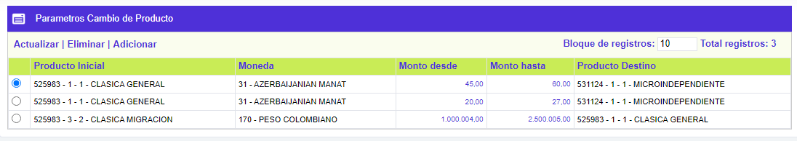
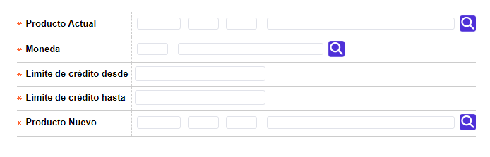
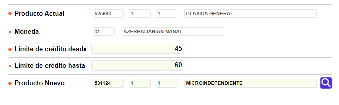

Parámetros cambio de producto
El proceso de Cambio masivo de producto requiere que, previamente, se definan los parámetros de los productos hacia los cuales puede cambiarse la TDC actual del cliente, por ello, a través de esta opción se definen las distintas combinatorias tanto de productos como de rangos de cupos que el sistema tiene en consideración para dicho proceso.
El formulario contiene las opciones Actualizar, Eliminar y Adicionar.

Adicionar: Si el usuario invoca la opción Adicionar se despliega un formulario con los siguientes campos:

|
Producto actual |
Campo obligatorio que posee lista de valores poblada en la opción Definición de productos, el usuario puede digitar los valores de Bin, Segmento y Grupo de afinidad o, seleccionar dicha combinatoria de la lista provista; los valores aquí registrados corresponden a los productos a los que pertenecen las TDC en poder de los clientes. |
|
Moneda |
Campo obligatorio, numérico de tres dígitos, en el que el usuario puede o bien digitar el código de la moneda del producto actual o bien seleccionarlo de lista de valores adjunta poblada en la opción Monedas. |
|
Límite de crédito desde |
Campo obligatorio, numérico de máximo catorce dígitos, en el que el usuario debe indicar, el límite inferior del rango de cupo asignado que deben tener las TDC, que pueden ser incluidas en la consulta que realiza el sistema para el proceso de cambio masivo de producto. |
|
Límite de crédito hasta |
Campo obligatorio, numérico de máximo catorce dígitos, en el que el usuario debe indicar, el límite superior del rango de cupo asignado que deben tener las TDC, que pueden ser incluidas en la consulta que realiza el sistema para el proceso de cambio masivo de producto. |
|
Producto nuevo |
Campo obligatorio que posee lista de valores poblada en la opción Definición de productos, el usuario puede digitar los valores de Bin, Segmento y Grupo de afinidad o, seleccionar dicha combinatoria de la lista provista; el valor aquí indicado debe ser excluyente y corresponden al otro producto diferente a los que pertenecen las TDC en poder de los clientes y que se requieren actualizar. |
Actualizar: Si el usuario invoca la opción Actualizar se despliega un nuevo formulario en el cual los únicos campos modificables son: Límite de crédito desde, Límite de crédito hasta y Producto nuevo.
